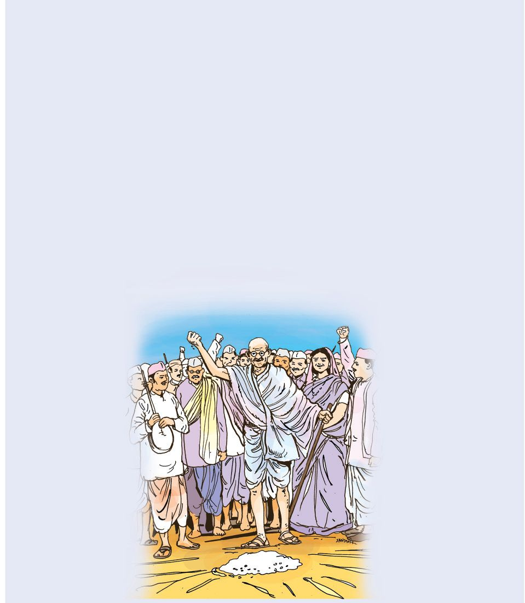
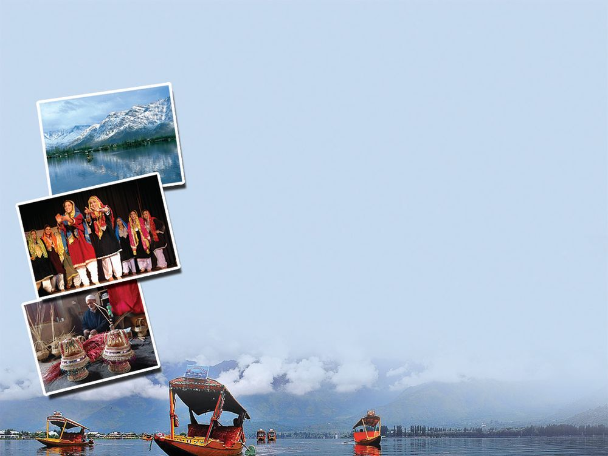
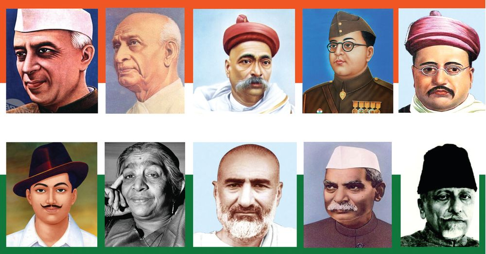
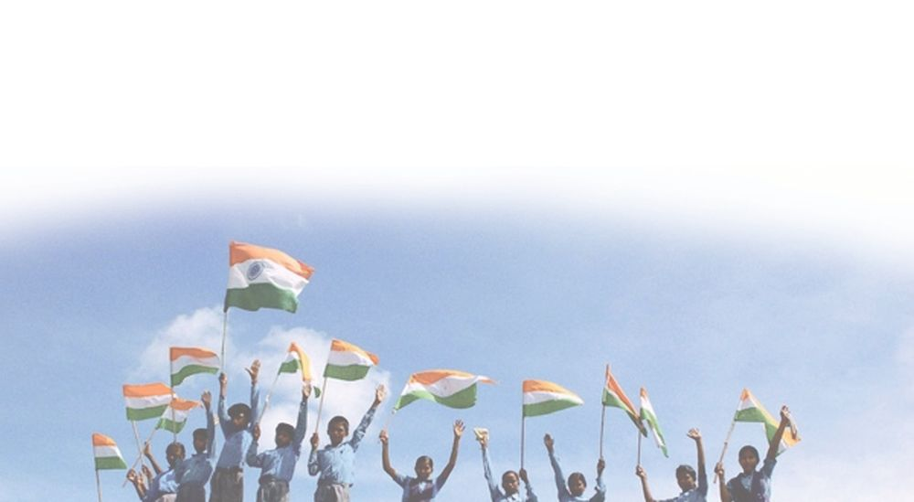
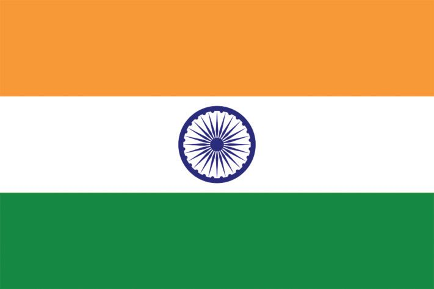
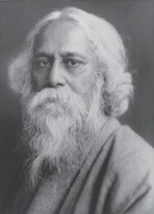
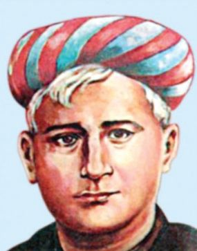
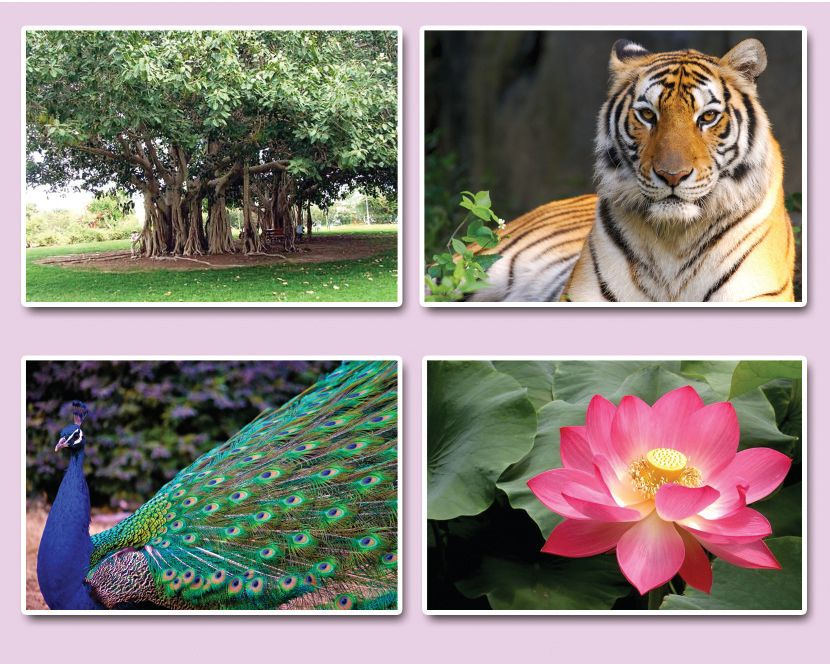
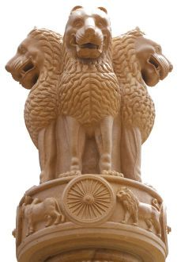

The Vast Land
Of India, my native land,
the states, let me mention hereIn the north, is Jammu Kashmir,
the paradise of tourists.
On the southern tip is Tamil Nadu,
the land that celebrates Pongal.
In the East is Arunachal,
the state of red hills
And then, the land of Gandhi’s birth,
it is Gujarat at the western end.
What are the various things mentioned
in the poem?
Which states are mentioned? Find out
and write them down.
There are other states also in India.
Name them.
: Andhra Pradesh was divided to form two states, Andhra Pradesh
and Telangana.
Page 35
Figure fig_ch03_p035_01 (Page 35)

Figure fig_ch03_p035_02 (Page 35)

Figure fig_ch03_p035_03 (Page 35)
Let us identify
Did you observe the political map of India?
Which are the states that lie close to the Arabian Sea?
Name the states that lie close to the Bay of Bengal.
Which are the states that do not have a sea shore?
Let’s know more
Arunachal Pradesh
The state at the eastern end of India. The
biggest Buddhavihara is situated here. Its
capital is Itanagar.
Arunachal is the
paradise of orchids. The wild buffalo
called Mithun, is the favourite animal of
the people. The people of Arunachal
speak several languages.
Jammu and Kashmir
99
Through India...
This state is situated at the northern end
of India. Kashmir is a land of mountains,
lakes and rivers. Wular, the largest fresh
water lake of India, is in Srinagar. The Dal
lake is also famous. Urdu and Kashmiri
are the major languages. Important dance
forms are Hafisa, Bacha Nagma and Ruf.
Jammu and Kashmir has two capitals.
The winter capital is Jammu and the
summer capital is Srinagar.
Tamil Nadu
Tamil Nadu is the southernmost state of India. Tamil is
the main language. It is also the neighbouring state of
Kerala. It is the land of Bharathanatyam. Its capital is
Chennai. The popular silk Kancheepuram belongs to
Tamil Nadu.
Gujarat
Environmental Science
Gujarat is at the western end of India.
Porbandar, the birth place of Mahatma
Gandhi is in this state. Garba dance is a
unique art form of Gujarat. Gujarat has the
longest coast of all the Indian states. Its
capital is Gandhi Nagar. Gujarati is the
main language.
You have learnt about a few states of our country.
Collect information about the other states of India. Note them
down in the environment diary.
100
Page 37
Figure fig_ch03_p037_01 (Page 37)

Figure fig_ch03_p037_02 (Page 37)
Now, complete the following table collecting information about the
states of India.
State
Capital
Neighbouring states
Didn’t you learn about different states?
Besides these, India has 6 union territories and the national
capital territory, Delhi.
Collect information about them also and write down in your
environment diary.
Though languages are different ...
How does the pledge that you take regularly at the school
assembly begin?
India ente
rajyamanu
Malayalam
Inthiya enathu
nadu
Bharathavo
nanna desh
India na
desamu
Tamil
Kannada
Telugu
These are the languages of our neighbouring states.
Which are the languages used in the other states of India?
101
Through India...
Notice how this pledge begins in different state languages.
Are you familiar with any of
these art forms? To which
state does it belong?
State
Art form
Tamil Nadu
Identify the major art forms
of other states of India.
Note them down in the
environment diary.
Bharathanatyam
Odissi
Kathak
How diverse is our country with respect to language, art forms,
culture etc.?
Inspite of these diversities, what are the things that unite us,
Indians?
National Symbols
Don’t you want to know about the national symbols we respect
and take pride in?
National Anthem
Who wrote our national anthem?
$ The duration for recitation.
$
One should stand at attention
position while reciting the
national anthem. The recitation
must be completed within 52
seconds.
The National Anthem
Jana-gana-mana adhinayaka,
jaya he
Bharatha-bhagya-vidhata.
Punjab-Sindh-Gujarat-Maratha
Dravida-Utkala-Banga
Vindhya-Himachala-Yamuna-Ganga
Uchchala-Jaladhi-taranga
Tava subha name jage,
Tava subha asisa mage,
Gahe tava jaya gatha.
Jana-gana-mangala-dayaka jaya he
Bharatha-bhagya-vidhata.
Jaya he, jaya he, jaya he,
Jaya jaya jaya, jaya he!
103
Through India...
What are the things that one must
keep in mind while reciting the national
anthem?
Page 40
Figure fig_ch03_p040_01 (Page 40)

Figure fig_ch03_p040_02 (Page 40)

Figure fig_ch03_p040_03 (Page 40)

Figure fig_ch03_p040_04 (Page 40)

Figure fig_ch03_p040_05 (Page 40)
Rabindranath Tagore
It was Rabindranath Tagore, who wrote our
national anthem. He was born at Kolkatha in
West Bengal. He started writing poems at a very
early age. He won the Nobel prize for literature
for his master piece, Gitanjali. He founded
Santhi Niketan which became Viswabharati
University later on.
National Song
“Vande... mataram...” is our national song.
It was written by Bankim Chandra
Chatterji.
National Flag
Environmental Science
There are 3 colours in our national flag – saffron at the top, white
in the middle and green at the bottom. At the centre of the white
area is the Asoka Chakra which is navy blue in colour with
24 spokes. Our national flag was designed by Pingali Venkayya.
104
Page 41
Figure fig_ch03_p041_01 (Page 41)

Figure fig_ch03_p041_02 (Page 41)

Figure fig_ch03_p041_03 (Page 41)
National Emblem
Our national emblem is adopted from
the stupa founded by Emperor Asoka
at Saranath. It consists of 4 lions
looking in four directions and the
‘dharmachakra’ beneath it, with the
forms of an elephant, a horse and a
bull around it. Below this, the words
‘Satyameva Jayate’ are inscribed.
National tree
National animal
National bird
National flower
$
National fruit
$
National game
$
105
Through India...
Collect pictures and details of our national symbols.
Write them down in the environment diary.
Significant learning outcomes
The learner
$ explains why India is a land of diversity.
$ lists out the 29 states, 6 union territories and the national
capital territory of India.
$ explains that each state has its own unique art forms.
$ identifies and states that there are various languages in
India.
$ identifies and lists the common factors which unifies the
Indians inspite of many diversities.
Let us assess
$ Fill up the boxes in such a way that neighbouring states do
not come in nearby boxes.
Haryana
Extended activities
$ Make models of our national flag.
Environmental Science
$ Make a map of India using different materials.
$ Collect patriotic songs and recite them.
$ Prepare questions for a quiz competition based on the
diversity of our country.
106